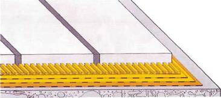
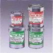
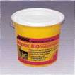
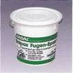
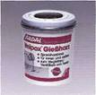

Эпоксидные клеи и затирки
МАТЕРИАЛЫ ДЛЯ УКЛАДКИ ПЛИТКИ
СИСТЕМА УНИПОКС
• Гидроизоляция • Клеи • Заделка швов
Эпоксидные материалы высокой химической и механической стойкости
- высокая химическая стойкость
- способность выдерживать сильные механические нагрузки
- легкость в использовании
- водонепроницаемость.
ОБЛАСТЬ ПРИМЕНЕНИЯ
Очистные сооружения, плавательные бассейны, душевые, фабрики-кухни, пищевая индустрия, производство напитков, производство пива, молочные заводы, больницы, лаборатории, химическая промышленность, транспортные сооружения.
СИСТЕМА УНИПОКС 
Защитное покрытие Унипокс SB
Клеи
Универсальный клей Унипокс 810 или Клей для пола Унипокс FE
Затирки
Унипокс 842-849 или Унипокс MS или Унипокс 3К 823
или Унипокс Мульти
ГИДРОИЗОЛЯЦИЯ
Защитное покрытие Унипокс SB

Эластичный и устойчивый к образованию трещин специальный гидроизоляционный материал на основе эпоксидной смолы.
Соответствует классам водостойкости I, II, III и IV согласно ZDB и классу С согласно АЬР
Области применения: гидроизоляция под керамической облицовкой для защиты основания от химикатов и агрессивных материалов:
- переработка молока
- лаборатории
- производство напитков
- фабрики-кухни
- автомастерские
- химическая промышленность
- плавательные бассейны
- скотобойни
Для гидроизоляции в системе Унипокс используются 2К Грунтовка Унипокс SB, 2K Защитное покрытие Унипокс SB, Стекловолокно, Лента Ардал, Внутренние и Внешние углы, Манжеты Пол / Стена.
Полная информация содержится в техническом описании 246
КЛЕИ
Универсальный клей Унипокс 810

Выдерживающий большие нагрузки клей на основе эпоксидной смолыСоответствует классификационным требованиям R2 Т по стандарту DIN EN 12004.
Области применения:
для приклеивания керамической облицовки;
- внутри и снаружи помещений
- во влажных помещениях
- на древесностружечные плиты
- на полах с подогревом
- на рабочих поверхностях кухонь
- в чашах плавательных бассейнов из полиэфира
- в химической промышленности
- в фабриках-кухнях
- в пищевой промышленности.
Полная информация содержится в техническом описании 205
ЗАТИРКИ
Эпоксидная затирка Унипокс 842-849

Цветная масса для заделки швов на основе эпоксидной смолы. Выдерживает высокие химические и механические нагрузки.Наносится мастерком или пневмопистолетом. Соответствует классификационным требованиям RG по стандарту DIN EN 13888 и R2 Т по стандарту DIN EN 12004.
Области применения:
заделка швов в керамической облицовке на стенах и полах;
- в плавательных бассейнах
- в душевых
- в кухнях
- на кухонных разделочных столах
- в больницах
- в пищевой промышленности и на предприятиях по производству напитков
- в лабораториях
- на пивоваренных заводах
- на молочных заводах
Унипокс 842-849 поставляется следующих цветов: бежевый (842), средне-серый (843), „старый"-белый (845), антрацит (846), серебряно-серый (849).
Для пневмопистолета: средне-серый (Р-843). Возможны другие цвета по заказу.
Полная информация содержится в техническом описании 232
ЗАЛИВКА ТРЕЩИН
Эпоксидная заливочная масса Унипокс Гиссхарц

Двухкомпонентная заливочная масса на основе эпоксидной смолы для заделки с силовым замыканием трещин в бесшовных полах. Обладает высокой прочностью. Не содержит растворителей. Только для горизонтальных поверхностей.Области применения:
- заливка трещин
- заливка ложных швов
- соединение стыковыми штырями
- прокалывание трещин
- для внутренних и внешних работ
- для полов с подогревом
Полная информация содержится в техническом описании 263
 Загрузить полную версию - Система Унипокс
Загрузить полную версию - Система Унипокс